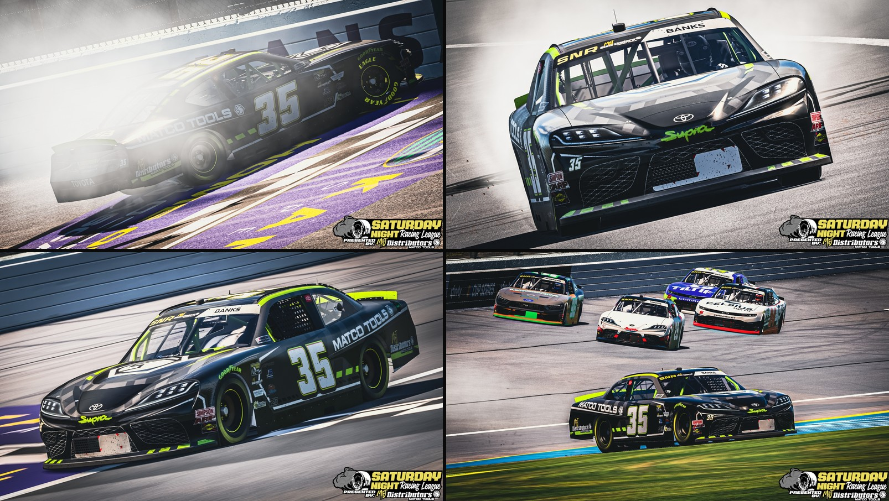
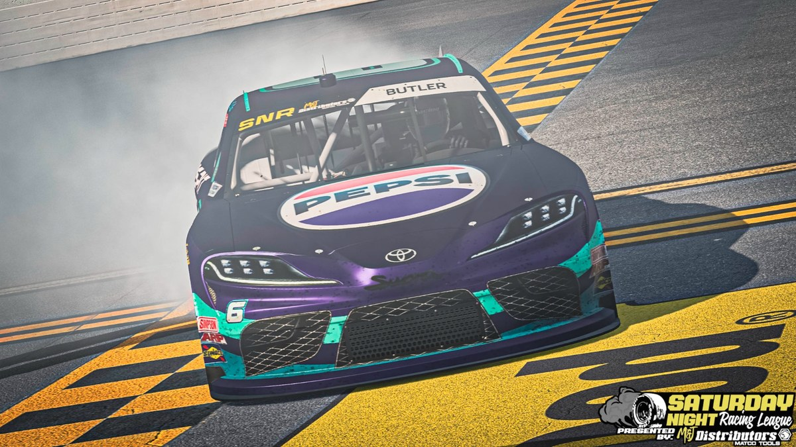
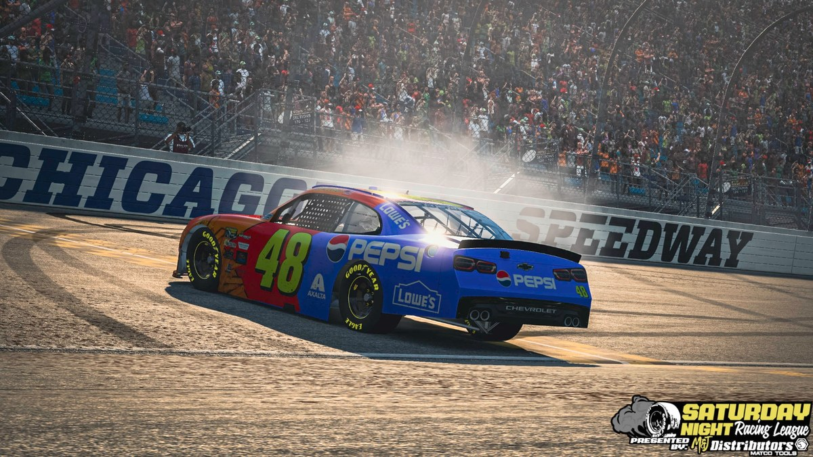
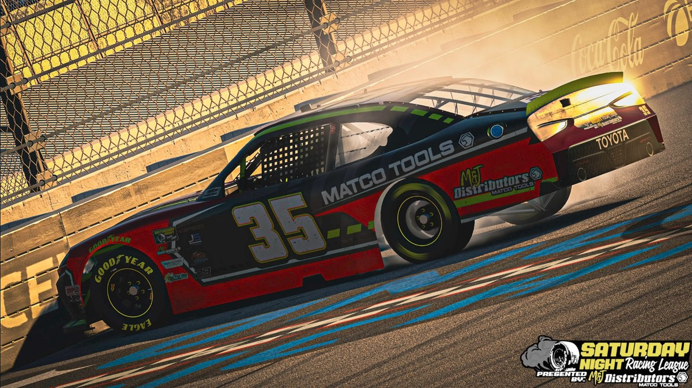
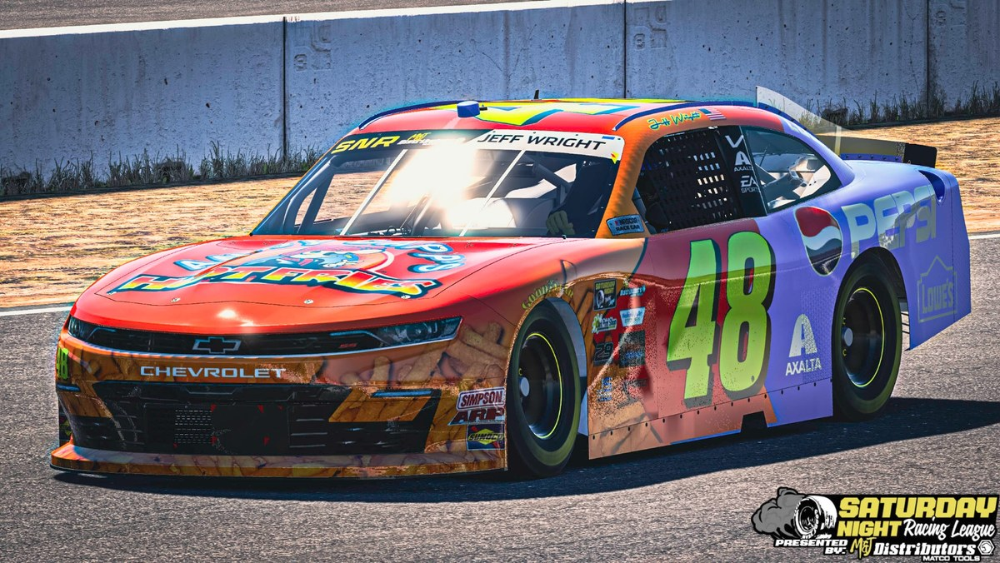
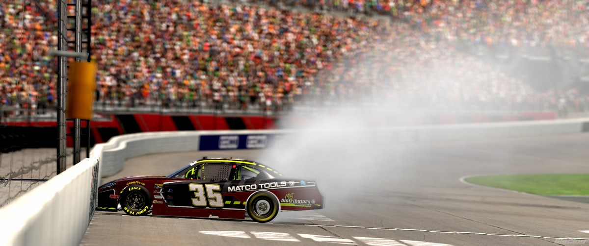
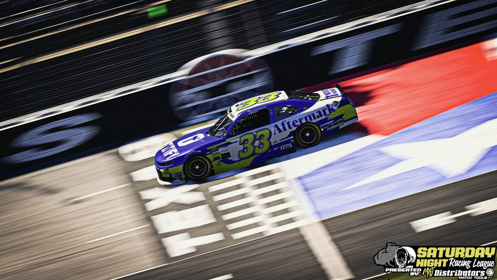
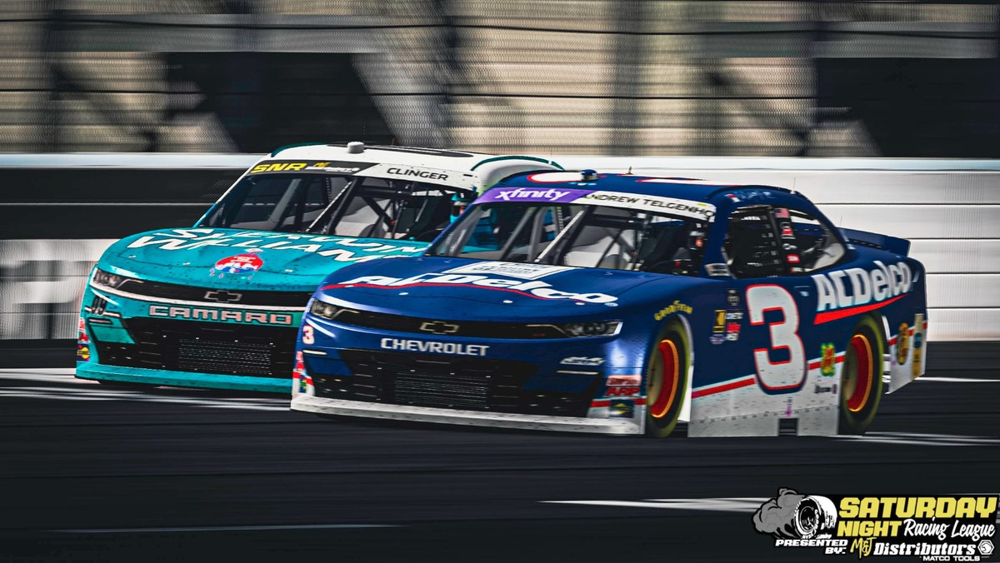

Latest News
Race recaps, announcements & league updates


Banks Goes Perfect at Kansas — Captures 2nd SNR Cup Series Championship
Joshua Banks turned in the drive of his career when it mattered most. The two-time SNR Cup Series champion won the pole, led a race-high 62 laps, and won the Season 6…

Turner Digs Deep at Bristol — Passes Late for 4th Win of the Season
Bailey Turner is putting together a championship-caliber close to the season. The points leader added another trophy to his case Saturday Night at Bristol Motor…

Brewer Breaks Through — First Career Cup Series Win at Michigan in Overtime Thriller
Phillip Brewer is a Saturday Night Racing League Cup Series winner. The former SNR Challenger Series Champion broke through for his first career Cup Series victory in…

Banks Takes the Lead — Wins at Homestead to Seize Championship Points Lead
Joshua Banks continued his remarkable Chase run Saturday Night at Homestead-Miami Speedway, winning Chase Race 2 of 5 to claim his 4th victory of the Season 6 campaign…

Elliott Butler Victorious for First Career Win at Talladega in the Project Grace 250!
Elliott Butler made history Saturday Night at Talladega Superspeedway, charging from 19th to lead a race-high 30 laps and claim his first ever career SNR Cup Series…

The Chase is Set — 14 Drivers Battle for the Season 6 Championship
The Saturday Night Racing League Cup Series regular season is officially in the books. After 17 grueling races, the field has been trimmed and the Chase for the SNR Cup…

Wright Dominates at Chicagoland and Survives Overtime Finish in Regular Season Finale
Jeff J. Wright closed out the regular season in style Saturday Night at Chicagoland Speedway, starting from the pole, leading a dominant 118 of 143 laps, and surviving a…

Banks Does it Again — Charges from 16th to Win at Richmond Raceway
Joshua Banks continued his late-season surge on Saturday Night at Richmond Raceway, charging from 16th to lead 48 laps and claim his third victory of the Season 6…

Wright Flawless at Sonoma — Leads Every Lap for 5th Win of the Season
Jeff J. Wright delivered one of the most dominant performances of the Season 6 campaign on Saturday Night at Sonoma Raceway, leading every single lap of the 55-lap race…

Banks Battles from 13th to Victory Lane at Atlanta Motor Speedway
The Saturday Night Racing League Cup Series returned to the old school legacy 2008 version of Atlanta Motor Speedway on Saturday Night for Race 14 of 22, and it was…

Bailey Turner Claims Third Win of Season 6 at Nashville Superspeedway
The Saturday Night Racing League Cup Series returned to Nashville Superspeedway for the third time in series history on Saturday Night for Race 13 of 22, and it was…

Wright Dominates the TeamBoss 300 at Charlotte Motor Speedway
Jeff J. Wright put on a masterclass performance Saturday Night at Charlotte Motor Speedway, leading a dominant 150 of 200 laps to claim victory in the TeamBoss 300 — his…

Stravato Makes it Three — Wins at Dover Motor Speedway to Extend Championship Lead
The Saturday Night Racing League Cup Series rolled into Dover Motor Speedway on Saturday Night for Race 11 of 22, and once again it was A.J. Stravato standing in Victory…

A.J. Stravato Dominates Texas Motor Speedway for Second Win of Season 6
The Saturday Night Racing League Cup Series made its return to Texas Motor Speedway on Saturday Night for Race 10 of 22, and it was A.J. Stravato putting on a dominant…

Telgenhof Storms from P32 to Victory Lane at EchoPark Speedway
The Saturday Night Racing League Cup Series visited newly paved EchoPark Speedway for the first time in series history last Saturday Night and the on-track action did…